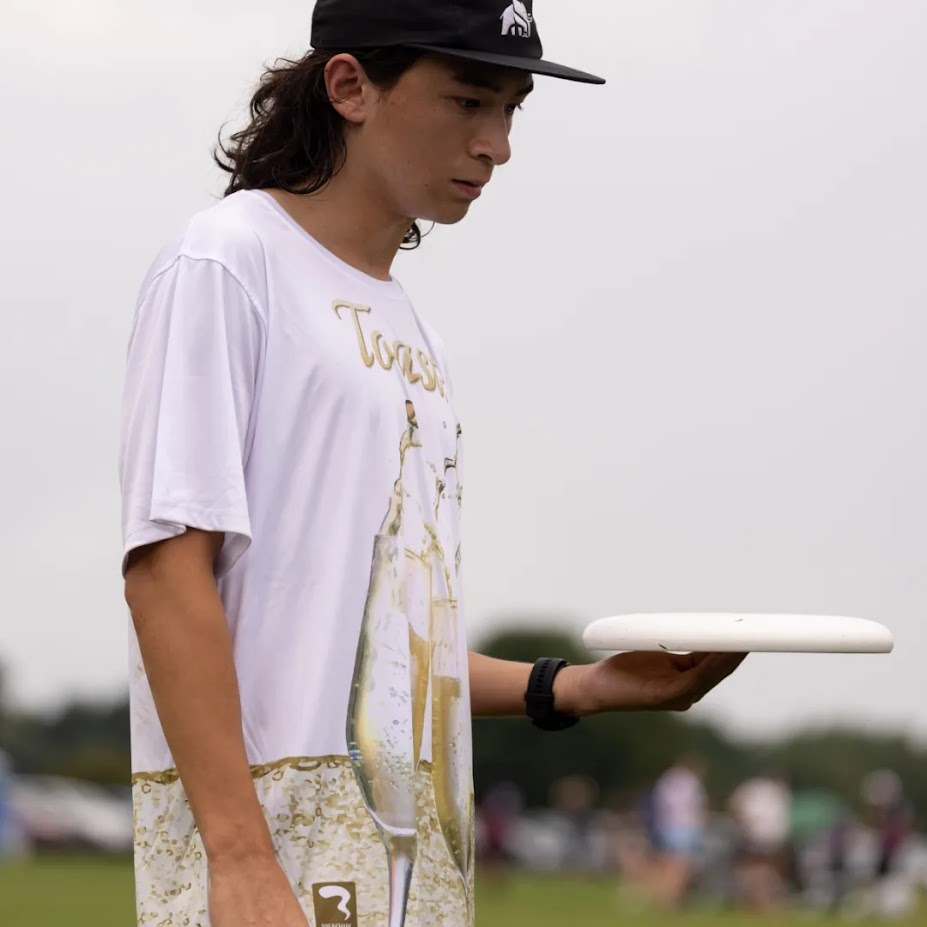
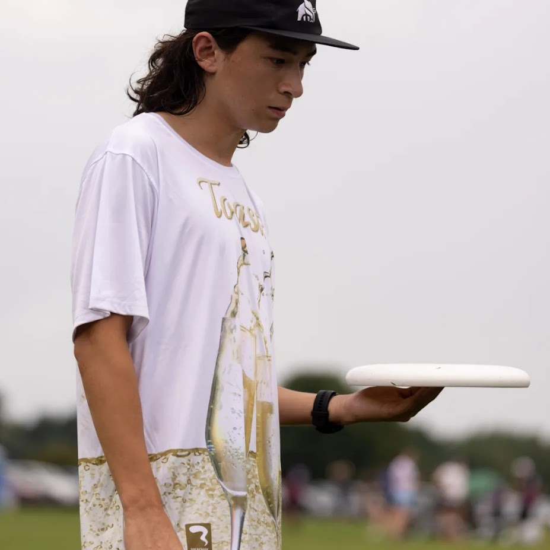

About Me
 

Hello Hello Hello! This is past Michael speaking, welcome to the "About Me" section of my web portfolio. I'll follow this up with some fun facts and text about me, while other pages will hold my resume and projects I've done. Enjoy!
Quick crazy facts about me!
- I'm an Eagle Scout!
- I'm from Elkhart, Indiana!
- I don't know why there are so many !!! I am not full of energy! I am tired! It's 3am!
I (Michael) am a third year Computer Science major.
When I'm not coding and studying, I live a relatively standard college life- I eat ramen and rice, I play
some video games, and I don't get enough sleep.(case in point, it is currently very late)
This last summer, I worked at Gentex Corp. in Zeeland, Michigan creating test cases and environments to test products in. It was a fun time!.
I work hours at the SRC (Student Recreation Center) as a lifeguard to help "pay the bills", so to speak and
that's a great time. I've lifeguarded for multiple years to this point, and it is a very valuable skill of
mine.
It is my opinion that pineapple does indeed belong on pizza. It is so yummy
My freshman year I was on the varsity swim team, but for the last two years I have been actively playing for the club Ultimate Frisbee team.
I am an avid Detroit Lions fan, meaning I am well accustomed to pain, pain and more pain because unfortunately that's all the franchise ever gives.
Anyway if you're still interested, click through some of the projects I've worked through, or check out my
resume, and have a nice day!